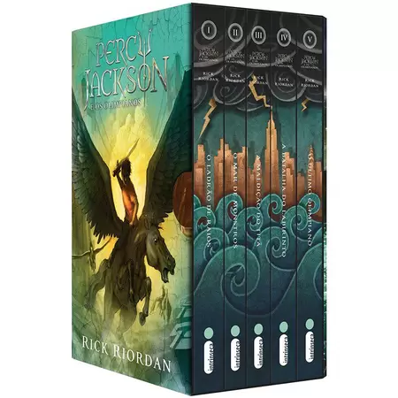
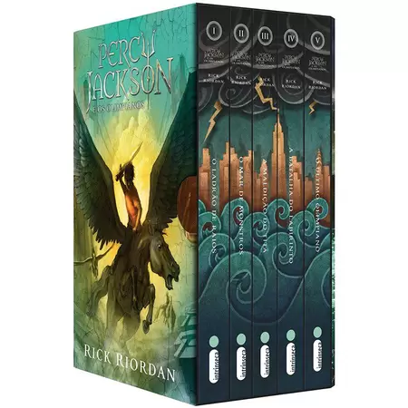
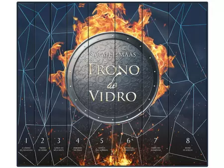

É assim que acaba, livro da autora Coollem Hoover. Nela vamos cohecer a triste história de Lily, Atlas e Ryle. Aborda questões sensiveis e temas importantes como violência doméstica e moral. Garanto que vai se apixonar por esses personágens.
É assim que acaba, livro da autora Coollem Hoover. Nela vamos cohecer a triste história de Lily, Atlas e Ryle. Aborda questões sensiveis e temas importantes como violência doméstica e moral. Garanto que vai se apixonar por esses personágens.  Nós das shakespeare livrarias, valorizamos seu abito literario. Te oferecemos livros com preços justos e um ambiente calmo e silencioso para vivenciar a melhor experiência.
Estampos localiado na Rua XV de Novembro, N°450. Passe aqui, compre um livro e ganhe um café de sua escolha.
Segue a baixo a nossa sessão de favoritos:
Percy Jackson, escrita por Rick Riordan. Narra a história do jovem Percy, o filho do Posseidom e de uma humana, por isso é chamado de semi-deus. Acompanhe Percy e seus amigos nessa série literaria imcrível.
De R$155,00 Por R$99,90
Dom Casmurro, um dos maiores classicos brasileiros, garanto que ao passar cada capítulo você vai se apaixoar um pouco mais por essa história.
Nós das shakespeare livrarias, valorizamos seu abito literario. Te oferecemos livros com preços justos e um ambiente calmo e silencioso para vivenciar a melhor experiência.
Estampos localiado na Rua XV de Novembro, N°450. Passe aqui, compre um livro e ganhe um café de sua escolha.
Segue a baixo a nossa sessão de favoritos:
Percy Jackson, escrita por Rick Riordan. Narra a história do jovem Percy, o filho do Posseidom e de uma humana, por isso é chamado de semi-deus. Acompanhe Percy e seus amigos nessa série literaria imcrível.
De R$155,00 Por R$99,90
Dom Casmurro, um dos maiores classicos brasileiros, garanto que ao passar cada capítulo você vai se apaixoar um pouco mais por essa história.
De R$60,00 Por R$45,00
É assim que acaba, livro da autora Coollem Hoover. Nela vamos cohecer a triste história de Lily, Atlas e Ryle. Aborda questões sensiveis e temas importantes como violência doméstica e moral. Garanto que vai se apixonar por esses personágens.
De R$42,50 Por R$28,00
 Conta a história do palhaço Penny, venha passar um pouquinho de medo nesse conto arrepiante.
Conta a história do palhaço Penny, venha passar um pouquinho de medo nesse conto arrepiante.
De R$110,00 Por R$83,30
Trono de vidro conta a história de Caalena, a melhor assassina de Adarlam. Porém está aprisioanda e fraca. E o restante dessa emocionate história você acompanha nessa maravilhossa série literária.
De R$254,30 Por R$198,36
 Venha conhecer a história da féericos e da Feyre. Garanto, você vai devorar esta saga.
Venha conhecer a história da féericos e da Feyre. Garanto, você vai devorar esta saga.
De R$89,00 Por R$78,00